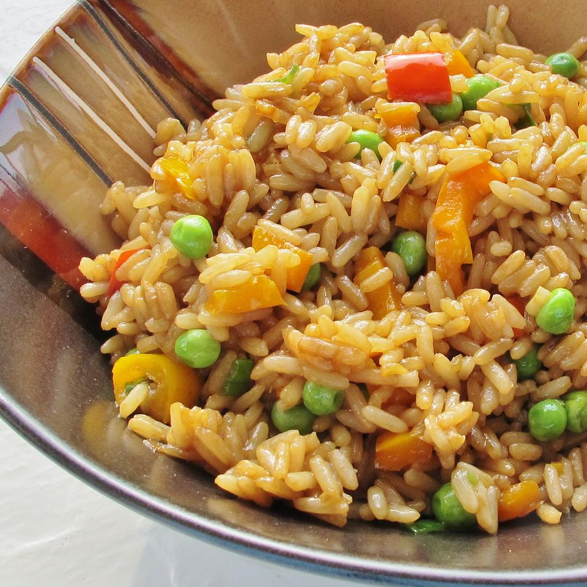

Vegetable Fried Rice

Description
This dish combines the nutty flavor of brown rice with the fresh taste of bell peppers, baby peas and other vegetables.
Ingredients
- 3 cups water
- 1 & 1/2 cups quick-cooking brown rice
- 2 tablespoons peanut oil
- 1 small yellow onion, chopped
- 1 small green bell pepper, chopped
- 1 teaspoon minced garlic
- 1/4 teaspoon red pepper flakes
- 3 green onions, thinly sliced
- 3 tablespoons soy sauce
- 1 cup frozen petite peas
- 2 teaspoons sesame oil
- 1/4 cup roasted peanuts (Optional)
Directions
- In a saucepan bring water to a boil. Stir in rice. Reduce heat, cover and simmer for 20 minutes.
- Meanwhile, heat peanut oil in a large skillet or wok over medium heat. Add onions, bell pepper, garlic and pepper flakes, to taste. Cook 3 minutes, stirring occasionally
- Increase heat to medium-high and stir in cooked rice, green onions and soy sauce. Stir-fry for 1 minute. Add peas and cook 1 minute more. Remove from heat. Add sesame oil and mix well. Garnish with peanuts, if desired.